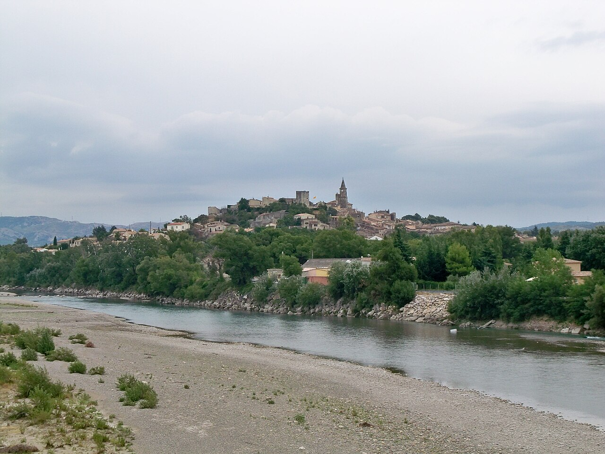

Historical Context
Jacquemus was founded in 2009 by Simon Porte Jacquemus, then nineteen, naming the brand after his late mother’s maiden name. The company remained independently owned for sixteen years. In February 2025, L’Oréal acquired a ten-percent minority stake for a reported sum just under €100 million. Simon Porte Jacquemus retains design control and founder authority. The company reported approximately €280 million in revenue in 2023.
It is late autumn 2008. The cemetery is small in the way Provençal cemeteries are small — stone walls, cypress trees, the southern light cutting hard angles even in November. The family stands in dark clothes against the bright air. A boy stands among them. He is eighteen years old, almost nineteen, and the woman in the ground was his mother.
Her name was Valérie. She was forty-two. She had died on a road she had driven a thousand times.
When the burial is over, the boy turns to his grandmother. He has come back from Paris for this — back from a fashion school he had stopped wanting, back from a city he had only just begun to know. He tells her, in the kind of certainty teenagers sometimes have, that he is going back. He knows now what he is going to do. He is going to start a brand. It will carry his mother’s name — not the married name, not the working name, but the maiden name on her birth certificate. And it will dress, for the rest of his working life, ‘the girl my mother was.’
His name is Simon Porte Jacquemus. The promise he is making is a fact no one outside the family will know for another decade. It is also the entire commercial logic of a company that does not yet exist.
What no one in the cemetery understands — what cannot be understood at this stage — is that the promise is also a moat. The brand he is about to start will be approached, again and again, by the largest fashion conglomerates on earth. He will say no every time. He will say no for sixteen years. The reason he can say no is the reason he is standing in this cemetery: he is not building a company. He is keeping his mother alive.
He is not building a company. He is keeping his mother alive.
That distinction will turn out to matter. When Simon Porte Jacquemus is approached by the giants who own most of the French luxury industry — the conglomerates that have absorbed Dior and Céline and Louis Vuitton and Givenchy and so many others — he will tell them, in different forms over the years, the same thing. The brand is not for sale because the name is not for sale. The name is his mother’s. To sell one is to sell the other. And so a structure that began as grief will outlast every offer the fashion industry can put in front of it.
The Farm at Mallemort

Pull back, and the world behind the boy comes into focus. Mallemort is a small town in the Bouches-du-Rhône, an hour northwest of Marseille. The Porte family runs a smallholding there. Vincent Porte, the father, grows spinach. Valérie grows carrots. Sometimes Vincent sings in metal bands on the weekend. There are three children. The economics of a Provençal smallholding in the 1990s do not generate fashion budgets.
Valérie dresses, her son will later tell an interviewer, in big loose trousers and grandmother dresses. She is too smiling for the kind of severe elegance the French call chic. She has shiny eyes. She has, in her son’s eventual phrasing, the gift of looking artistic on no money — which is another way of saying she has the gift of looking like herself. When Simon is seven years old, he cuts a household curtain in half and sews her a skirt out of the linen. It is the first piece he will ever design. Fifteen years later, it will turn out to be the prototype.
In 2008, at eighteen, Simon leaves Mallemort for Paris and enrols at ESMOD, one of the city’s private fashion schools. He lasts a few months. The program does not match the ambition; the courses do not feel like the future he had imagined for himself. He has begun to drift toward leaving when the call comes from Provençe. His mother is dead.
He goes home for the funeral. He stands at the grave. He speaks to his grandmother. And then, because there is nothing else to do, he goes back to Paris with the promise sitting inside him like a small, hard, unfinished object he has not yet figured out how to use.
It is worth pausing on what kind of decision the cemetery decision actually was. It was, on its face, the kind of romantic plan a grieving teenager might announce and never carry out. He had no money. He had no investors. He had no fashion school credential, no industry contacts, no design vocabulary beyond what he had taught himself by cutting curtains for his mother. The French luxury industry does not, as a rule, reward self-taught teenagers from the southern countryside. It rewards the alumni of its great houses, the sons and daughters of its great families, the slow accumulation of institutional credibility over careers measured in decades.
The boy at the cemetery had none of that. What he had was a name.
The Comme des Garçons Years
In 2009, at nineteen, Simon launched a fashion label called Jacquemus. To pay for his collections, he took a sales-floor job at the Comme des Garçons store on Rue du Faubourg Saint-Honoré. By day he sold other designers’ clothes. By night he made his own. His pieces were stripped down — fewer pockets, fewer buttons, fewer details — because he could not afford the trim. The thrift became the aesthetic. The constraint became the design language. He showed clothes to his friends and asked them to wear them around Paris during fashion week. There was no marketing budget. There was no PR firm. There was, for several years, just a teenager and his collection and the sales floor at CDG.
The thrift became the aesthetic. The constraint became the design language.
It was at Comme des Garçons that Adrian Joffe — the husband of Rei Kawakubo and the brand’s longtime president — saw him. Joffe later described to fashion journalists what he had recognised: a freshness, an originality, and most of all ‘a strong vision.’ He had never, Joffe said, met anyone so clear-headed about what they wanted to build. The Comme des Garçons sales floor would pay for Paris Fashion Week 2012, where Jacquemus showed his collection on the official calendar for the first time.
Three years later, in 2015, Simon won the Special Jury Prize at the LVMH Prize, the international competition Bernard Arnault’s foundation runs for young designers. The grant was real money — enough to fund the next collection, enough to keep the lights on. The mentorship was access. Symbolically, it was something else. It was the first formal sign that Bernard Arnault’s institutions had noticed the boy. The gravitational pull of LVMH — the conglomerate that had built its fortune by absorbing the great independent French houses one after another — had begun to bend toward him.
This is the period in which most founders of small fashion brands either disappear into obscurity or start being absorbed into the larger system that has noticed them. Simon did neither. He took the prize money, finished the collection, and kept going.
The Lavender Field
By the time the boy reached twenty-nine, the brand had become a phenomenon. The Le Chiquito mini bag, launched with the Spring/Summer 2018 collection, became the first viral handbag of the social-media era — a thing so small a lipstick would not fit inside it. Kim Kardashian carried one. Rihanna carried one. Bella Hadid carried one. The bag was a meme before fashion had fully learned the word.
In June 2019, Jacquemus staged the show that became the brand’s defining cultural image. Its name was Le Coup de Soleil — the Sunburn. Its location was the Plateau de Valensole in Provençe, his mother’s home country. Its set was a hot-pink runway, more than half a kilometre long, slicing through the violet of the lavender fields. Models walked through the perfume of the Provençal summer in sun-coloured dresses and oversized straw hats. Beyoncé would wear the dresses on stage. The image — pink against purple, runway against horizon, the south of France against the rest of the world — was on every screen on earth within hours.
Jacquemus, Le Coup de Soleil, Plateau de Valensole, June 24, 2019.
It was also, almost to the day, ten years after the funeral.
What no one outside the company could quite name was what the lavender field was actually doing. It was not a fashion show, exactly. It was a son walking the global luxury industry to his mother’s doorstep. The viral moment looked, from the outside, like marketing genius. From the inside, it was something simpler and harder to copy. It was the brand’s operating principle made visible: every aesthetic decision, for ten years, had been filtered through the question of whether Valérie would have wanted it.
By this point, the offers were circling. Conglomerates approached. Investment bankers approached. He had been approached in different ways by LVMH and others in the luxury machine, the suitors that approach every founder whose brand is suddenly worth absorbing. To Business of Fashion, in 2022, Simon would frame his answer in four words: ‘We don’t need it.’ The numbers behind the sentence were real. Revenue was €11.5 million in 2018. It was around €100 million by 2021. It rose to €213 million in 2022, and to approximately €280 million in 2023. The faster the brand grew, the louder the offers — and the more clearly he refused them.
The Deal That Kept the Name
By late 2024, the picture had changed. The luxury market was softening. International expansion had become expensive — new flagships in New York’s SoHo, on Bond Street in London, on Avenue Montaigne in Paris. The retail buildout would need outside capital that the brand’s own cashflow could no longer entirely fund. Simon retained Rothschild & Co., the boutique investment bank. He told Le Figaro, in his own words, that he valued his independence and wanted to pass the business on to his children — but that he needed a partner who would stay a minority shareholder. The brief was unusual. He was not selling the company. He was hiring a backer.
Jacquemus, Le Chouchou, Château de Versailles, June 2023.
In January 2025, Sarah Benady joined as chief executive, recruited from LVMH-owned Céline, where she had run North America. The signal was clear: Jacquemus was now big enough to hire from the giants instead of being hired by them. Two weeks later, on 7 February 2025, the deal closed. L’Oréal acquired a ten-percent minority stake for a reported sum just under €100 million. The terms were explicit. The investment was structured to fund independent growth — retail expansion, a new beauty partnership, the next decade. Simon retained design control. He retained founder authority. He retained the company name.
At L’Oréal’s annual results conference the same day, the group’s chief executive Nicolas Hieronimus told analysts that the company had no intention of increasing its stake or of acquiring a fashion business. The minority position was the point. The independence was the structure.
This is the close of the story. Most founders raise outside capital and lose control of their companies over the following decade. Simon designed the deal so that did not happen. The reason he could is the reason the deal exists in the form it does. The brand was never the asset. The asset was the name — and the name was Valérie’s. To sell it was to sell her. He could not do it. So he built every system around the company — direct-to-consumer operations, a structured minority investment, a chief executive recruited from the largest luxury group on earth — that meant he never had to.
The brand was never the asset. The asset was the name — and the name was Valérie’s.
The brand grew to nearly €300 million on the gravitational pull of one promise made by an eighteen-year-old at a Provençal cemetery in late 2008. Sixteen years later, the label sewn inside every garment Jacquemus has ever shipped still reads JACQUEMUS. His mother’s maiden name. The girl his mother had been, dressed by the boy who would not let her go.
Le Valérie — the bag named after Simon’s late mother. Jacquemus, 2025.
Sources
- AnOther Magazine, A/W 2015 — Simon Porte Jacquemus on his mother.
- Robert Williams, Business of Fashion, 2022.
- WWD, October 2024 and February 2025.
- FashionNetwork, February 2025.
- Le Figaro, 2024.
- L’Oréal Group annual results, 7 February 2025.
- Comme des Garçons / Adrian Joffe interview record.
- Wikipedia — Simon Porte Jacquemus.